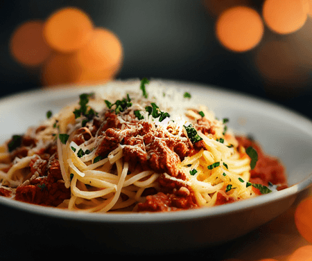

Filipino Style Spaghetti Recipe

The all time favorite in every party of Filipino family.
Made of ground pork, sweet style sauce and hotdogs.
Ingredients
- 1 pound spaghetti
- 1 pound ground pork
- 3 cloves garlic, minced
- 1 onion, minced
- 35 ounces Filipino Style Spaghetti Sauce
- 1 pound hotdogs, sliced diagonally
- 1 tbsp vegetable oil
- 1/2 cup water
- 1/2 cup shredded Cheddar cheese
- salt and pepper to taste
Instructions
- Fill a large pot with lightly salted water and bring to a rolling boil over high heat. Once the water is boiling,
stir in the spaghetti, and return to a boil. Cook the pasta uncovered, stirring occasionally, until the pasta has
cooked through, but is still firm to the bite, about 12 minutes. Drain well in a colander set in the sink.
- Heat the vegetable oil in a skillet over medium heat. Stir in the garlic and onion; cook and stir until the onion
has softened and turned translucent, about 5 minutes.
- Stir in hot dog slices and continue to cook until hot dogs are heated through.
- Stir in the beef and pork; season with salt and pepper. Cook and stir until the meat has browned.
- Pour in the spaghetti sauce and water. Simmer until the sauce has thickened, about 15 minutes.
- Serve over spaghetti with Cheddar cheese sprinkled on top.